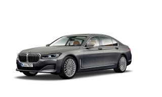

Precisamente en 1917 la empresa decide variar su anterior denominación, Rapp-Motorenwerke, a Bayerische Motoren Werke. En el año 1923, la empresa crea su primera motocicleta, mientras que en el año 1929 fabrica su primer automóvil, el BMW 3/15 PS (conocido también como AM1). En los años 60, la empresa alcanza unos niveles de producción y venta realmente importantes, contando con 7.000 trabajadores y 239 millones de marcos anuales de facturación. En el año 1965 se lanza su conocido slogan en Alemania “Aus Freude am Fahren” (“Conducir por ilusión”), y en 1969 este otro, “Freude am Fahren” (“Diversión en conducir”), que alcanzan una gran popularidad. La década de los 90 arranca con casi 71.000 empleados y unas ventas anuales de más de 27.000 millones de marcos. La progresión de la marca a nivel internacional es imparable. Su slogan más conocido e impactante fue el icónico “¿Te gusta conducir?“, que marcó a una generación entera de conductores. Ésta fue sustituido hace poco tiempo por el nuevo y responsable “Cuando conduzcas, conduce“.
El BMW Serie 5 es un sedán de lujo, de gama alta, que se renovó por completo a finales de 2017 con una nueva generación que destaca por ser más confortable, muy tecnológica y muy eficiente gracias a una nueva gama de motores y al significativo ahorro de peso al que ha asistido, con 100 kilogramos menos con respecto a su predecesor gracias al uso de aluminio y aceros de alta resistencia. A menudo definimos al BMW Serie 5 como un BMW Serie 7 en miniatura y es que, si bien este último es más lujoso y distinguido, la tecnología y el confort del Serie 5 no están lejos del ofrecido por su hermano mayor. Entre los rivales del BMW Serie 5 nos encontramos con el Mercedes Clase E y el Audi A6, como los más importantes, con diferencia. Pero también con otras alternativas no menos interesantes, como el Jaguar XF o el Lexus GS, que con diferentes características también pueden plantar cara al BMW Serie 5. La berlina cuenta con unas dimensiones de 4.966 mm de longitud, 1.473 mm de alto y 1.903 mm de ancho, mientras que el espacio de carga del maletero se sitúa en 530 litros.

El BMW Serie 6 es un producto que se presenta con cuatro carrocerías: Coupé, Cabrio, Gran-Coupé (sedán con diseño de coupé) y, por último, Gran Turismo, el cual llega al mercado como relevo de la Serie 5 Gran Turismo. Dos variantes dos puertas y otras dos cuatro puertas en las que BMW ha plasmado su tradicional elegancia y diseño. Al igual que sucede en la Serie 4, el BMW Serie 6 se presenta en un principio con una gama de dos carrocerías desde su lanzamiento en 2011 y su posterior actualización a fínales de 2014 (nueva configuración de la parrilla ovoide doble típica de BMW, así como el nuevo diseño de los faldones delantero y posterior): El BMW Serie 6 Coupé se trata, valga la redundancia, de un coupé de dos puertas de carácter deportivo situado un escalón por encima del BMW Serie 4.
BMW-Vierzylinder, sede de BMW junto al Museo BMW, Múnich, Alemania.
Sede de española de BMW localizada en Madrid
Concesionarion oficial BMW en Málaga